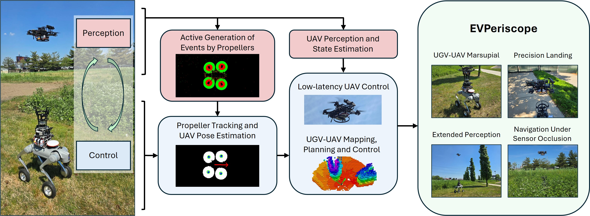
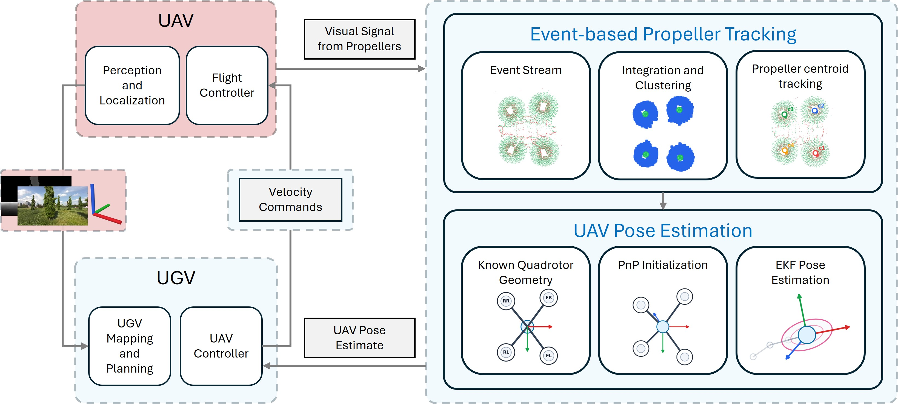
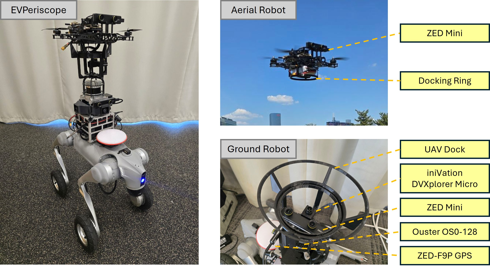
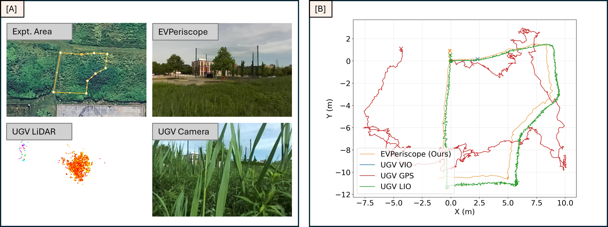
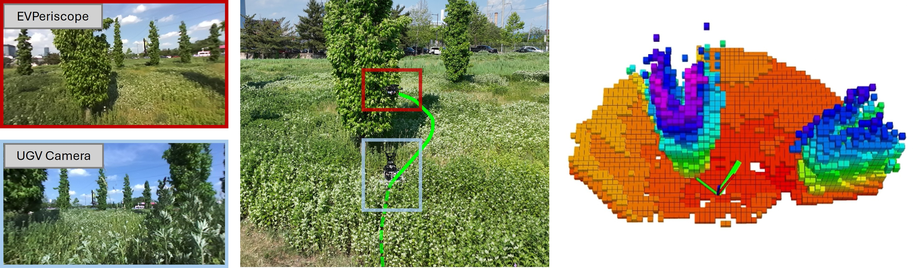

Abstract
Reliable relative localization between aerial and ground robots is a key requirement for tightly coordinated heterogeneous teams. This can be difficult to do using conventional frame-based cameras and fiducial markers because they are sensitive to motion blur, lighting variations, and payload constraints. This paper presents EVPeriscope, an event-based perception system that enables detection, localization and control of a quadrotor using an upward-facing event camera on a ground robot by detecting the high-frequency visual signature of its propellers. This system allows the quadrotor to function as an extended perception system for the ground robot when onboard sensors exhibit degradation or occlusion. We demonstrate the capabilities of this marsupial ground-aerial system via experiments in challenging field conditions with wind speeds of up to 15 mph, in both daylight and at night. We show that the system supports localization and closed-loop navigation through dense foliage where the ground robot’s sensors are occluded. Our control system for the quadrotor operates at 200 Hz entirely with onboard sensing and computation.
Overview
Unlike a conventional camera, which captures full frames at a fixed rate, an event camera has independent pixels that each report a change in log-brightness the instant it happens. This asynchronous, per-pixel sensing gives event cameras microsecond-level latency, high dynamic range, and no motion blur, but it also means the output is a sparse, continuous stream of individual events rather than images.
We exploit the high-frequency visual signature of a quadrotor's propellers to detect and track them using an event camera. This lets an upward-facing event camera on the ground robot pick out and track a quadrotor reliably, even in low light and without needing fiducial markers, enabling low-latency localization and closed-loop control of the quadrotor from the ground robot.
An event stream showing the strong, periodic signature generated by the UAV's propellers. 50,000 events are generated in just a 10 ms window.

Overview of EVPeriscope. EVPeriscope is a marsupial ground-aerial system that enables tightly coupled localization and control between a quadrotor UAV and a UGV, leveraging the aerial platform for extended perception when the UGV's onboard sensors are degraded.

EVPeriscope system diagram. The UGV-mounted event camera detects and tracks the UAV propellers from asynchronous events, clusters them into propeller centroids, and uses the known asymmetric quadrotor geometry to estimate the UAV pose.

EVPeriscope system hardware configuration.

EVPeriscope is able to maintain a high vantage point above the foliage to enable accurate localization.

EVPeriscope enables closed-loop navigation and obstacle avoidance in dense foliage where the UGV sensors are occluded.
Video Presentation
Experiment Videos
BibTeX
@misc{ong2026evperiscope,
title={EVPeriscope: Extended Perception across Aerial and Ground Vehicles with Event-based Propeller Tracking},
author={Dexter Ong and Vijay Kumar and Pratik Chaudhari},
year={2026},
eprint={2609.11920},
archivePrefix={arXiv},
primaryClass={cs.RO},
url={https://arxiv.org/abs/2609.11920},
}